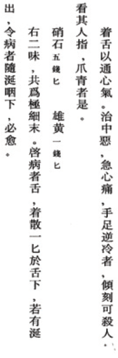
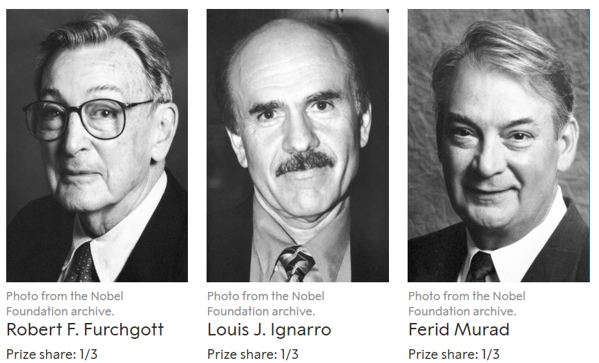

Updating...
《腑行诀脏腑用药法要》之“救猝死中恶开窍方五首”

The Nobel Prize in Physiology or Medicine 1998

Source: The Nobel Prize in Physiology or Medicine 1998. NobelPrize.org. Nobel Prize Outreach AB 2024. Sat. 20 Apr 2024. www.nobelprize.org/prizes/medicine/1998/summary/